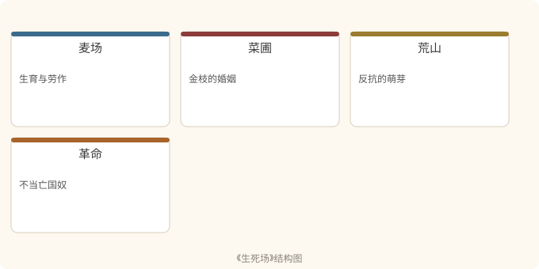

生死场
一、基本信息
| 作者 | 萧红 |
|---|---|
| 成书/出版 | 1935年出版（通说待核；萧红 B110 作者页语境；鲁迅作序说通说待核） Xiao Hong — Encyclopaedia Britannica（百科全书） |
| 国别/地区 | 中国 |
| 时代 | 现当代 · 现代 |
| 体裁 | 中篇小说 |
| 语言 | 汉语（白话） |

《生死场》结构图（主题·结构图）
二、创作背景
东北沦陷区农村的生与死：『人和动物一起忙着生，忙着死』（名句通说待核）。
萧红为『东北作家群』代表（通说待核）。
三、内容脉络
哈尔滨近郊村庄：王婆、金枝、月英等农妇的生育、疾病与死亡（通说）。
后段转入抗日起义——『我不当亡国奴』（情节通说待核）。
四、主要人物表
| 人物 | 身份 | 说明 |
|---|---|---|
| 王婆 | 农妇 | 服毒未死的坚韧者（通说） |
| 金枝 | 少妇 | 婚姻悲剧（通说） |
| 赵三 | 农民 | 从反抗到妥协（通说） |
五、主题与艺术特点
- 生的坚强与死的挣扎（通说）。
- 女性身体与乡土苦难（通说）。
- 沦陷区叙事的先声（通说）。
六、影响与评论
- 萧红为中国现代文学重要女作家（B110 作者页定位）；鲁迅曾为其序（通说待核）。
Xiao Hong — Encyclopaedia Britannica（百科全书） - 与《呼兰河传》并列为萧红双璧（通说）。
Xiao Hong — Encyclopaedia Britannica（百科全书）
七、阅读建议
难点
- 散文化结构——不以情节取胜。
- 东北方言与农事细节。
- 《生死场》（奴隶社1935年初版说，通说待核）。
- 《萧红全集》（人民文学出版社/黑龙江大学出版社，通说待核）。
可与《呼兰河传》对照：前期 vs 晚期萧红。
八、待核实
- 1935年奴隶社出版与鲁迅序文细节待核。
- 『忙着生，忙着死』原文核对。
- 『麦场』等章节结构待核。
本页主要来源
萧红的其他收录作品：呼兰河传